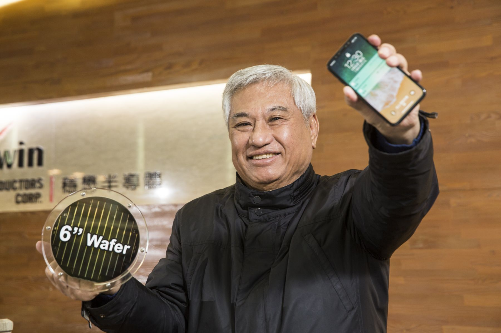

趨勢分享 >
今周刊編輯團隊 2019 / 12 / 25
穩懋半導體董事長陳進財愛寫書法；這天，備妥筆墨紙硯，我們請他現場揮毫。幾個字眼在他腦中來回琢磨，最後他選定這兩個字，為自己的人生與事業拚搏過程寫下注解：逆戰。
陳進財，是2019年5G商機發酵最大的驚奇之一，16年來，他讓一家搖搖欲墜的企業，如今變身成無線通訊科技的翹楚。一位科技門外漢，拯救了穩懋、廣鎵與宣德3家電子公司。
穩懋2019年以來股價大漲146％，是5G指標企業之一。公司所生產的砷化鎵晶片，全球市占率6％，以砷化鎵代工市場而言，市占率高達71％，可謂是「砷化鎵代工產業中的台積電」。陳進財也擔任銅箔基板廠聯茂的董事長。穩懋是持有聯茂7.7％股權的第二大股東，穩懋與聯茂市值加總，達1600億元。
一個出生於新北瑞芳雞鴨鵝家禽小批發商之家，因父親替人作保背負債務而家道中落的窮小子，如今成為穩懋、上銀、聯茂等高科技公司重要股東，闖出上百億身價。
他的故事，不僅是一部台灣5G業新江山開拓史，還是一位平凡上班族，如何在職場闖蕩、披荊斬棘的成功啟示錄。
他出生於市井之家，父親原本是在瑞芳煤礦坑推煤車，後來做起家禽批發與零售的生意。他在廟裡用功苦讀，基隆中學畢業後，考上淡江大學會統系。畢業後，會計師考試落榜，他先在大學裡當助教，後應徵到安侯建業聯合會計師事務所當查帳員。
1971年，南僑準備上市，他正好是主辦查帳員，被當時的總經理，也就是現在的南僑董事長陳飛龍延攬至公司上班，從會計部「一級專員」做起。
陳進財身上，可說完全不具備成為成功高科技人的條件。除身兼穩懋與聯茂董事長；也擔任工業4.0的翹首企業上銀科技的副董事長；還是ＩＣ載板大廠景碩與陶瓷電路板暨ＩＣ封裝測試廠同欣電子獨立董事。目前仍擔任南僑副董事長。
與其說他運氣好，不如說他每次遭逢看似厄運際遇，總是想盡辦法轉變成人生破框的機會。
2003年接手穩懋，就是一個把厄運扭轉成好運的最佳寫照。
16年前，砷化鎵半導體可說是「慘業」。陳進財回憶：「那時候，國外大廠市占率已達97％；在台灣，包括穩懋在內，至少也有5、6家在做砷化鎵。」1999年成立的穩懋，「從2000年起，每年虧10億元跑不掉吧！」2003年，當時的23.5億元資本額幾乎快燒光，穩懋處境岌岌可危。
「當時的砷化鎵半導體設計公司，幾乎每家都有自己的生產線……，他們本身產能的利用率都不到一半，穩懋憑什麼讓這些公司放出代工訂單？」陳進財從這個問題出發：「答案是技術要比客戶好、成本要比客戶便宜。」
「我很感謝葉董（葉國一）的力挺。」但除此之外，在「技術優先」決策下，陳進財著手進行生產線縮編，「廠房基本上只用來研發！」把原本近500人的編制，一口氣縮編至不到100人。「那幾年，我們幾乎沒有營收。」穩懋副董事長王郁琦回憶，2004年至2006年這3年期間，穩懋平均每年仍以虧損10億元的速度在失血。
那是一段技術打底的日子，難熬，「但我就是每天告訴自己，總有一天會成功。」這份信心來自三方面：第一，「我很感謝當年公司瀕臨破產時，仍然不離不棄的那群年輕工程師……，他們很有理想性。」
第二，「我從台積電身上學到很多，基本上我們就在複製矽晶圓代工模式的路，我非常關注台積電的成功策略……，我不認識張忠謀、張忠謀也不認識我，但我會說自己是張董的『私塾弟子』。」
至於第三個信心來源，則是一份藍圖。原來，在接手穩懋經營後，陳進財就透過美國總經理的幫忙，從客戶端召集一群專家作為顧問團，「他們描繪了未來10年砷化鎵產業的發展趨勢。」順著這個趨勢，穩懋的研發團隊開始鎖定必須提早掌握的技術，精準而快速地全面追趕。
「砷化鎵曾經歷一段很慘淡的歲月，2000年至2006年，全球砷化鎵產量增加了10倍以上，但產值卻原地踏步完全沒有增長，當時幾乎沒有砷化鎵公司是賺錢的！」但在這段過程中，「我們很幸運沒有衝營收，而是拚技術。」現在看來，這樣的底蘊養成，也讓穩懋極有可能站上5G時代的浪尖。
陳進財以一位科技門外漢，分別拯救了穩懋、廣鎵與宣德三家電子公司。
由於受到父親幫人作保背負債務的教訓，陳進財雖避免幫朋友作保，但當朋友有財務上的困難時，他也盡其所能疏財仗義。
上銀董事長卓永財是他淡江會統系的學長，「為了資助卓永財創業，我請頂新魏家以我原本認購的價格，把康師傅股票買回去，入股了上銀。」「後來頂新康師傅1996年在香港上市一路大漲，如果沒賣的話，大概有10幾億元吧。」
上銀雖然後來表現很爭氣，2009年上市後一年就漲到近4百元，可惜的是，老早在上銀上市幾年前，陳進財為了金援穩懋，參與其增資，賣掉大部分手中上銀持股，導致他又錯失了一大筆財富。
可能是天公疼好人吧！3年隨著砷化鎵元件需求大爆發，穩懋股價翻了好幾番，目前市值約1200億元， 陳進財個人含家族持股約一成，換算身價應有百億元以上。
回首73年的人生歲月，父親作保背債、會計師考試落榜、初進南僑坐冷板凳，扭轉水晶肥皂銷售頹勢、與高達百億元財富擦身而過，乃至於在穩懋、廣鎵與宣德3家電子廠最危急時刻，出手救援……，每次遭逢的挑戰，當下彷彿是勝算極低的一場場戰鬥，卻場場出現逆轉勝。這就是陳進財的逆戰人生！
本圖文由今周刊授權轉載